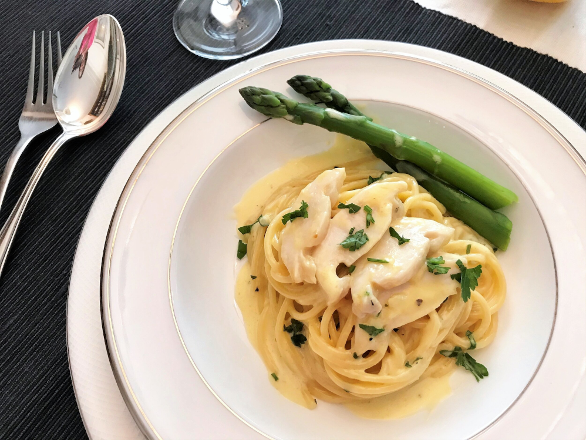

Curanto
Back to Homepage

Description
This simple feast is a traditional Chilean dish that originates in the island of Chiloe, one of Patagonia's northern most and larger islands. This dish is an assortment of meats and seafood that was traditionally prepared in a hole with hot stones, covered with Chilean "nalca" leaves (a variation of rhubarb). Today, this dish is often prepared in a pot over a stove, or in a paiella disk over a grill. The latter is recommended, but you will need a cover for the disk; if you have any rhubarb leaves, or nalca leaves if you're lucky, those will work too in a pinch. While the dish requires various ingredients, cooking it could not be simpler, and you will be able to serve a small crowd with this amount of food. If using a pot, be certain that it is a large one, you will serve 6-8 people with this recipe.
Ingredients
- 2 tablespoons olive oil
- 1 1/2 punds of chicken legs and thighs (combined)
- 200g dried spaghetti (1 package
-
- 2 tablespoons of unsalted butter, Divided!
- 5 large garlic cloves
- 1/3 cup of white wine (the cheaper the better)
- 1 cup of thickened cream
- 1 tablespoon of lemon juice
- 1/4 cup of chopped parsley
- salt and pepper or red pepper flake to taste
Steps
- Bring a large pot of salted water to a boil. Add the pasta and cook, stirring occasionally, until just tender. Drain and set aside.
- While the pasta is cooking, place a large pan over medium heat. Add the butter to the pan. Once the butter is melted, add garlic and cook until fragrant (about 30 seconds to 1 minute). Do not brown.
- Pour in wine and bring to a simmer for 2 minutes or until wine reduces by half.
- Add cream and allow to simmer until slightly thickened.
- Remove pan from the heat. Stir in lemon juice and add the spaghetti and abalone to the pan to warm through slightly. Garnish with parsley.
- Serve with pan-friend asparagus or any other fresh or sauteed green (optional)